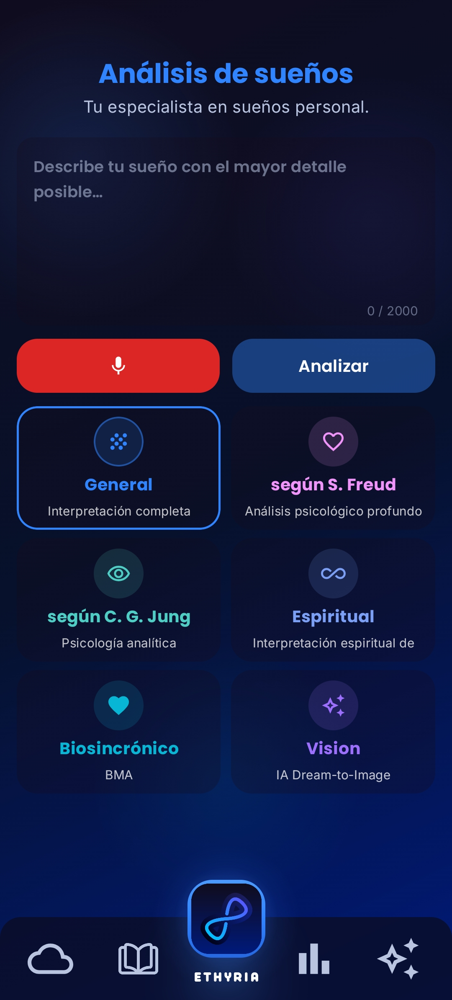

Interpretación de Sueños
Cinco perspectivas sobre tu sueño. Freud. Jung. Espiritual. Biosincrónica. General. Tú decides cómo leer tu sueño.

Tu subconsciente habla cada noche. Ethyria traduce lo que quiere decirte. En descubrimientos. En imágenes. En impulsos que cambian tu vida.
App gratuita de interpretación de sueños para Android. Interpretación de sueños con IA según Jung y Freud, diario de sueños visual y tu sueño como obra de arte. La app de interpretación de sueños que realmente entiende. Pruébala gratis.
Tres pantallas reales. Interpretación. Comunidad. Estadísticas.
Ningún sueño tiene una sola verdad. Ethyria te muestra cinco ángulos completamente distintos sobre el mismo sueño. Tú decides qué perspectiva te impacta.
Agua, dientes, volar, ser perseguido – cada símbolo lleva un mensaje. Descubre la profundidad psicológica detrás de tus sueños.
Un sueño no se puede volver a soñar. Pero se puede ver. Tres formas de transformar tu noche en una imagen.
Imágenes. Sentimientos. Fragmentos. Eso es todo lo que queda. Ethyria lo transforma en una interpretación de sueños que realmente comprendes.
Escribe lo que viviste. Tecleas o lo dices en voz alta. Ethyria reconoce símbolos, lugares y emociones en tu relato. En tiempo real.
¿Cómo quieres leer tu sueño? Elige la perspectiva que te hable. Cada una muestra algo diferente. Sin compromiso. Enfoque total.
Ethyria traza el viaje emocional de tu sueño. ¿Dónde fue más alta la tensión? ¿Dónde llegó el alivio? Ves lo que sentiste. Antes de poder nombrarlo.
El edificio del que no podías salir. Estar descalzo. La niebla. Ethyria te muestra lo que se esconde detrás de las imágenes que tu subconsciente eligió para ti.
De tu sueño surge algo que te llevas contigo. Una pregunta que no se te va de la cabeza en todo el día. Un impulso que te hace avanzar.
"¿En qué área de tu vida buscas ahora una 'habitación' que aún no has encontrado? ¿Y qué te impide abrir la puerta correcta?"
Cinco razones por las que esta app de interpretación de sueños se siente diferente a todo lo que has probado antes.
Sé de los primeros en usar Ethyria. Gratis. Sin compromiso. Y descubre por fin lo que tus sueños realmente quieren decirte.
Cuéntanos cómo fue. A cambio, te regalamos otros 30 días Premium.
Introduce tu email. Tu enlace de descarga personal llegará directamente a tu bandeja de entrada.
FAQ
Respuestas transparentes sobre interpretación de sueños con IA, apps de interpretación de sueños, símbolos oníricos, privacidad, Freud vs. Jung y el diario de sueños digital.
Asegúrate 30 días Premium. Gratis. Antes de irte.
Sin spam. Solo tu enlace de descarga exclusivo.